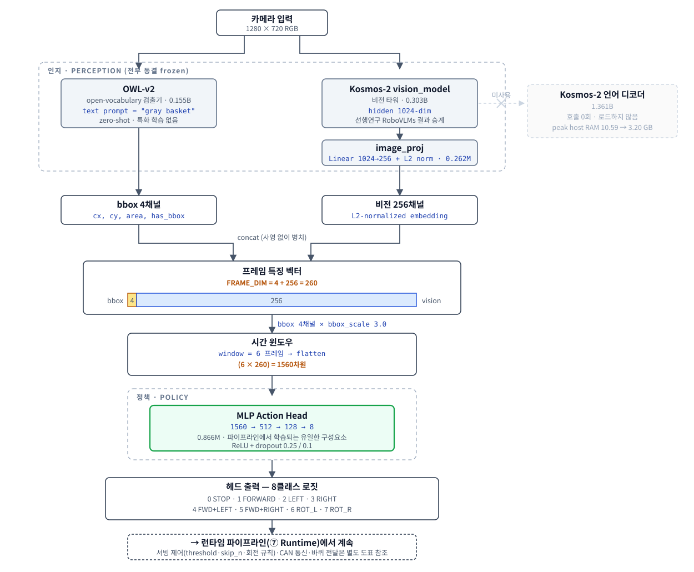

초안에서 비어 있던 절과 사실오류 2건에 대해, docx 서식을 건드리지 않고 절별로
복사해 넣을 수 있는 산문입니다. [교체] / [삽입] /
[유지] 표기로 어떻게 반영할지 구분했습니다.
초안 요구 원문 02~07의 260차원 규격을 반영해 새로 그렸습니다. PDF(논문 삽입용 벡터) · SVG(편집용) · PNG(2×)

대상:
EdgeGround-VLA_바퀴형로봇_목표지향주행_경량모델_초안_0805.docx작성 2026-08-05 · 액션플랜 1번(본문 사실오류 정정) + 2번(22건 초고) · 도표 재작성 포함 근거 페이지: 논문 드래프트 보완 25건 문제/대응
사용법 — docx를 직접 편집하지 않고 이 파일의 문단을 절별로 복사해 넣으십시오. 교수님이 잡아둔 서식·스타일을 건드리지 않기 위함입니다. 각 블록의 제목이 docx의 절 제목과 1:1로 대응합니다.
표기 규칙
- [교체] — 기존 본문을 이 문단으로 바꿉니다(사실오류 정정)
- [삽입] — 비어 있는 자리에 넣습니다
- [유지] — 그대로 두고 표시된 한 줄만 보탭니다
- 🔴 = 초안에서 보완이 요구된(빨간색 표기) 항목 번호
[삽입] — 요구 원문의 메모를 산문으로 풀어 쓴 것입니다. 메모 자체는 지워도 됩니다.
제안 파이프라인의 한 프레임은 260차원 특징 벡터로 표현된다. 이 벡터는 서로 다른 두 인코더의 출력을 병치(concatenate)한 것으로, 앞의 4채널은 오픈 보캐블러리 검출기 OWL-v2가 산출한 기하 정보(
cx,cy,area,has_bbox)이고 뒤의 256채널은 Kosmos-2 비전 타워의 출력(1024차원)을 선형 사상(image_proj, 1024→256)한 뒤 L2 정규화한 시각 문맥 표현이다. 두 인코더의 출력은 동일한 임베딩 공간으로 사상되지 않으며, 저차원 기하 정보와 고차원 시각 문맥이 각자의 형태를 유지한 채로 결합된다. bbox 4채널에는 스케일 정합을 위해 배율 3.0을 곱한다.행동 헤드는 6개 시점(
window=6)의 프레임 특징을 이어붙인 1560차원 벡터를 입력받아 8개 행동 클래스의 로짓을 출력한다. 이때 6개 시점은 연속된 6프레임이 아니라 결정 간격 5프레임마다 하나씩 취한 것으로, 현재 시점 t에 대해 t−25, t−20, t−15, t−10, t−5, t의 여섯 지점을 참조한다. 즉 윈도우가 실제로 덮는 구간은 25프레임이다. 시간 문맥을 명시적으로 포함시킨 것은 그라운딩이 매 프레임 수행되지 않고 일정 주기로만 갱신되기 때문이며(1.4절), 간격을 두고 표집함으로써 인접 프레임의 중복 대신 실제로 변화가 누적된 구간을 보게 한다.전체 파이프라인에서 학습되는 구성요소는 행동 헤드(0.866M 파라미터)뿐이다. OWL-v2(0.155B), Kosmos-2 비전 타워(0.303B), 선형 사상(0.262M)은 모두 동결(frozen)되며 별도의 특화 파인튜닝을 수행하지 않는다. 즉 본 연구의 학습 비용은 전체 파라미터가 아니라 0.866M에 국한되고, 이것이 제안 구조가 온디바이스 환경에서 반복 실험을 감당할 수 있는 근거이다.
요구 원문 02~07의 260차원 규격을 그대로 반영한 도표를 새로 그렸습니다. 논문용 벡터 포함 3종을 제공합니다.
| 파일 | 용도 |
|---|---|
docs/v5/figures/edgeground_vla_architecture.pdf |
논문 삽입용 벡터 (LaTeX \includegraphics, Word 삽입 모두 가능) |
docs/v5/figures/edgeground_vla_architecture.svg |
편집용 원본 (텍스트 수정 가능) |
docs/v5/figures/edgeground_vla_architecture.png |
슬라이드·미리보기용 (2× 해상도, 흰 배경) |
도표에 명시한 것 — 요구 원문과 1:1로 대응합니다.
| 요구 원문 | 도표에서 어떻게 표현했는가 |
|---|---|
| 02 프레임 특징 벡터 260차원 | 중앙에 스택 바로 4 : 256 비율을 시각화 |
03 FRAME_DIM = 4 + 256 = 260 |
같은 블록에 수식 그대로 표기 |
| 04 bbox 4채널 (OWL-v2 출력) | 좌측 경로. bbox_scale 3.0은 4채널 전체에 적용됨을 화살표 라벨로 표기 |
| 05 비전 256채널 (Kosmos-2 → image_proj → L2) | 우측 경로. Linear 1024→256 + L2 norm 블록을 분리 |
| 06 window=6 flatten → 1560차원 | 별도 "시간 윈도우" 블록 |
| 07 8클래스 로짓 | 출력 블록에 8개 클래스 이름 전부 나열 |
추가로 표현한 것: 학습/동결/미사용 3색 범례(초록=학습되는 0.866M 헤드만), 언어 디코더 1.361B를 미사용으로 분리 표기(호출 0회, 로드 제거로 호스트 RAM 10.59→3.20GB), 그리고 서빙 제어 파라미터를 하단 블록에 배치해 1.4절과 연결.
요구 원문 04번은 (area는 bbox_scale=3.0 배율 적용)이라고 되어 있으나, 실제로는
bbox 4채널 전체에 배율이 곱해집니다.
seq.append([v * bbox_scale for v in bboxes[idx]] + vis[idx].tolist())
# scripts/exp73_held_aware_train.py — bboxes의 4개 원소 전부에 곱해짐
[교체]기존 본문은 "두 인코더 특징이 동일한 차원의 임베딩 공간으로 매핑된 후 … 이 융합 표현이 행동 헤드의 입력으로 사용된다"고 서술하는데, 실제 구조와 다릅니다. OWL-v2 출력은 선형 사상을 통과하지 않습니다.
Kosmos-2 비전 타워가 산출한 1024차원 특징은 선형 사상(1024→256)과 L2 정규화를 거쳐 256차원 표현으로 축약된다. 정규화는 이 표현의 스케일을 고정해, 값의 범위가 전혀 다른 기하 정보와 함께 사용될 때 한쪽이 학습을 지배하지 않게 한다.
반면 OWL-v2가 산출한 기하 정보는 선형 사상을 거치지 않고 4개의 스칼라 값으로 그대로 결합된다. 따라서 본 구조의 결합 방식은 이종(heterogeneous) 특징을 공통 공간으로 사상하는 융합이 아니라, 서로 다른 성질의 두 표현을 병치하여 행동 헤드가 각각을 직접 참조하도록 하는 방식이다. 기하 정보를 축약하지 않고 원래 값으로 전달하는 것은, 조향 결정이 목표의 화면상 수평 위치(
cx)에 직접 의존하기 때문에 그 값이 다른 표현에 섞여 희석되는 것을 피하기 위한 선택이다.
[교체]기존 본문의 "융합된 256차원 특징"과 "4개의 hidden layer"가 모두 사실과 다릅니다.
| 기존 본문 | 실제 | |
|---|---|---|
| 입력 차원 | 256 | 1560 (6프레임 × 260) |
| hidden layer | 4개 | 2개 (512 → 128 → 8) |
행동 헤드는 1560차원 입력을 받는 2층 MLP로, 512와 128 크기의 은닉층을 거쳐 8개 클래스 로짓을 출력한다(각 은닉층 뒤에 ReLU와 드롭아웃 0.25/0.1을 둔다). 전체 파라미터는 0.866M이다. 행동 클래스는 정지(0), 직진(1), 횡이동(2, 3), 대각 직진(4, 5), 제자리 회전(6, 7)으로 구성된다.
연속 좌표 회귀나 diffusion/flow-matching 기반 action expert 대신 경량 분류기를 사용한 것은 두 가지 이유에서다. 첫째, 대상 로봇의 펌웨어가 속도 명령의 크기를 사용하지 않고 방향만 사용하는 상수 속도 구조이므로, 연속 출력의 표현력이 하드웨어 단계에서 소실된다. 둘째, 동일 조건에서 네 종류의 헤드를 비교한 결과 이산 분류가 연속 회귀 및 flow-matching 방식보다 높은 성능을 보였다(5절). 즉 경량 분류기의 채택은 계산량을 위한 타협이 아니라 이 과제와 하드웨어 조건에서의 실측 결과에 따른 선택이다.
[삽입] — 기존 설명 문단 앞이나 뒤에 붙입니다.
본 구조는 설계를 먼저 확정한 뒤 검증한 것이 아니라, end-to-end VLA 구성에서 관측된 두 차례의 실패를 거쳐 도달한 것이다.
첫째, Kosmos-2에 LoRA를 적용한 end-to-end 구성에서 언어 경로의 어텐션 비중이 0.000%로 측정되었다. 이 값은 헤드만 학습시킨 조건에서도 동일하게 재현되었으므로, 학습 방식의 문제가 아니라 사용한 사전학습 모델의 상태에 기인한다. 즉 언어 입력이 행동에 기여하지 않는 상태였다.
둘째, 동일 구성에서 오프라인 지표와 실제 주행 성능이 어긋났다. 프레임 단위 행동 일치도가 58.6%였음에도 목표 도달 성공률은 0%였고, 최종 위치 오차가 1.45m까지 누적되었다. 궤적을 분석한 결과 이동 거리 자체는 목표와 유사했으나 방향 오차가 누적되는 양상이었다.
이에 목표의 위치를 모델 내부 표현에 맡기지 않고 명시적 좌표로 분리하는 구성을 시험하였다. 동일 데이터에서 프레임 일치도는 75.9%, 목표 도달 성공률은 66.7%로 개선되었고 최종 위치 오차는 0.55m로 감소하였다. 두 구성의 이동 거리 특성이 유사한 반면 방향 오차만 크게 달라졌다는 점에서, 개선의 원인은 좌표를 명시적으로 제공한 것에 있다고 판단하였다.
이 관찰이 본 구조의 근거다. 목표의 기하 정보는 오픈 보캐블러리 검출기가 제공하고, 장면의 시각 문맥은 시각-언어 모델의 비전 타워가 제공한다. 두 경로 모두 언어 디코더를 경유하지 않는다. 절 제목의 heterogeneous는 이처럼 성질이 다른 두 인코더를 각자의 강점에 맞게 분담시킨다는 의미다.
인코더 선택 근거 — 다수의 시각-언어 인코더 중 Kosmos-2를 택한 것은 선행연구 RoboVLMs의 인코더 비교에서 Kosmos-2가 가장 좋은 결과를 보였기 때문이며, 그 실측 결과를 승계한 것이다. 다만 본 구현에 RoboVLMs의 코드는 포함되지 않는다.
[삽입] 🔴09~12절 전체가 비어 있습니다. 아래 4개 문단이 순서대로 들어갑니다.
검출기의 신뢰도 임계값은 운영 환경에서 0.20으로 설정하였다. 이 값은 사전 실험에서 결정한 0.25를 실기 조건에 맞춰 완화한 것이다. 임계값 스윕 결과 0.25에서 정탐률 95.3%를 유지하며 목표 물체가 존재하지 않는 프레임에 대한 오탐률이 0%였고, 0.1에서는 오탐률이 74.7%로 증가해 물체 부재를 판정할 수 없었다.
실기에서는 동일 임계값에서 검출 실패가 더 빈번하여 0.20으로 낮추었다. 다만 실기에서 검출에 실패한 프레임을 동일 모델·동일 임계값으로 재실행한 결과 197개 중 155개(78.7%)가 다시 실패하였고 전체 판정 일치율은 86.6%였다. 따라서 실기와 오프라인의 검출률 차이는 연산 환경보다는 장면 자체의 난이도에 주로 기인한다.
임계값을 낮추는 조작은 검출률을 확보하는 대가로 물체 부재 판정 능력을 희생하는 성질을 가진다. 이 절충은 후술하는
has_bbox채널의 한계(7절)와 동일한 문제의 다른 측면이다.
검출기는 매 프레임 수행되지 않고 3프레임마다 한 번 수행되며, 그 사이 프레임은 직전 검출 결과를 유지한다(zero-order hold). 이에 따라 실효 그라운딩 주기는 약 1.3Hz이다.
이 설계가 필요한 이유는 검출 단계가 전체 지연을 지배하기 때문이다. 대상 하드웨어에서 검출 1회에 1901.7ms가 소요되어 전체 추론 지연의 약 97%를 차지하며, 매 프레임 호출 시 제어 주기를 확보할 수 없다.
대가로 기하 정보는 최대 2프레임만큼 낡은 값이 된다. 로봇이 회전하는 동안에는 이 지연이 조향 오차로 직결되므로, 다음 항의 재검출 규칙과 함께 사용해야 의미가 있다.
검출에 실패하면 위의 주기를 무시하고 즉시 재검출을 수행한다. 여기에 회전 동작과 관련된 세 가지 보호 규칙을 함께 적용한다. 첫째, 회전 동작을 수행한 직후에는 시야가 변했으므로 직전 검출 결과를 재사용하지 않고 반드시 재검출한다. 둘째, 한 번의 회전 지속 시간을 0.4초로 제한하여 과회전으로 목표가 시야를 벗어나는 것을 막는다. 셋째, 회전을 연속으로 선택하지 못하게 하여 회전과 재검출이 반복되는 상태에 갇히는 것을 방지한다.
이 규칙들이 필요한 근본적인 이유는 검출 실패 상황이 학습으로 처리되지 않았다는 데 있다. 학습 데이터 16,599 프레임 중 검출 실패 프레임의 비율은 0.00%(0개)이므로, 모델은 목표를 관측하지 못하는 상태에 대응하는 행동을 학습한 적이 없다. 따라서 본 연구는 이 공백을 학습이 아니라 서빙 단계의 제어 규칙으로 우회하였다. 이는 제안 시스템의 한계이며, 학습 데이터에 검출 실패 사례를 포함시키는 것이 후속 과제이다.
정지 판정은 기하 규칙이 아니라 학습된 정지 클래스(class 0)의 예측으로 수행한다. 다만 에피소드 시작 직후 3회의 추론에 대해서는 정지 예측을 무시한다. 행동 헤드가 6프레임의 시간 문맥을 입력받는 구조에서 시작 시점에는 과거 프레임이 존재하지 않아 현재 프레임으로 패딩되며, 이 상태에서 정지가 예측되면 출발 직후 정지하는 실패가 발생한다. 따라서 이 값은 임의로 정한 상수가 아니라 윈도우 크기에서 파생된 값이다.
한편 정지 클래스는 원본 데이터에 존재하지 않아 각 에피소드의 마지막 프레임에 부여한 합성 라벨이다. 따라서 학습된 정지 판정의 신뢰도는 데이터에서 자연히 관측된 정지 행동에 근거한 것이 아니라는 점을 명시한다.
[삽입] 🔴13데이터는 조작자가 조이스틱으로 로봇을 직접 원격조작하는 방식으로 수집하였다. 각 에피소드는 정해진 시작 위치에서 출발해 목표 물체(회색 바구니)에 도달할 때까지의 영상과 조작 명령을 로봇 내부에 기록한 것이다.
저장 형식은 에피소드 단위 HDF5 파일이다. 한 파일에 1280×720 RGB 영상 시퀀스와 각 프레임에 대응하는 조작 명령이 들어가며, 파일 속성으로 해당 세션의 실행 설정(사용한 체크포인트, 검출 임계값 등)을 함께 기록한다. 이 실행 설정 기록은 사후 분석에서 어떤 모델이 어떤 조건으로 동작했는지를 확인하는 유일한 근거가 되었다(5.2절).
수집 규모는 225 에피소드, 16,599 프레임이다. 구성은 시작 위치 5종 × 경로 3종의 15개 조합에 각 15 에피소드를 균등 배치한 것이다. 시작 위치는 중앙, 약좌, 강좌, 약우, 강우이고 경로는 직진, 좌곡선, 우곡선이다. 실기 평가에서 사용한 5개 고정 목표 지점이 이 시작 위치 5종과 동일하다(IV절).
학습·분석에서는 이 225 에피소드를 두 묶음으로 구분한다. 트랙 A는 시작 위치가 중앙에서 벗어난 4종(약좌·강좌·약우·강우)의 12개 조합, 180 에피소드이다. 트랙 F는 시작 위치가 중앙인 3개 조합, 45 에피소드이다. 두 묶음을 구분하는 이유는 과제의 성격이 다르기 때문이다. 트랙 A는 목표가 화면 중앙에서 벗어난 상태에서 출발하므로 조향으로 정렬을 회복해야 하고, 트랙 F는 목표가 처음부터 중앙에 있어 곡선 경로를 지시받더라도 직진으로 도달할 수 있다. 즉 트랙 F는 모델이 경로 지시를 따르는지, 아니면 목표가 보이면 직진해 버리는지를 가르는 대조군 역할을 한다.
| 시작 위치 | 에피소드 | 프레임 | 프레임/ep | 묶음 |
|---|---|---|---|---|
| 강좌 | 45 | 3,611 | 80.2 | 트랙 A |
| 약좌 | 45 | 3,299 | 73.3 | 트랙 A |
| 중앙 | 45 | 2,819 | 62.6 | 트랙 F |
| 약우 | 45 | 3,268 | 72.6 | 트랙 A |
| 강우 | 45 | 3,602 | 80.0 | 트랙 A |
| 합계 | 225 | 16,599 | 73.8 | A 180 / F 45 |
좌측 시작과 우측 시작은 각각 90 에피소드로 동수이고, 프레임 수도 6,910 대 6,870으로 0.6% 차이에 불과하다. 그라운딩 라벨의 화면상 수평 위치 평균도 0.4976으로 중앙에 가깝다. 즉 수집 설계 수준에서는 좌우가 대칭이다.
그럼에도 행동 클래스 분포는 대칭이 아니었다. 전체에서 좌측 계열 행동은 3,384 프레임, 우측 계열은 4,122 프레임으로 21.8% 차이가 있다. 이 차이를 두 묶음으로 분해하면 원인이 좁혀진다.
| 묶음 | 좌측 계열 | 우측 계열 | 격차 |
|---|---|---|---|
| 트랙 A (좌우 시작 180ep) | 2,820 | 3,551 | +25.9% |
| 트랙 F (중앙 시작 45ep) | 564 | 571 | +1.2% |
불균형은 트랙 A에서만 발생하고 트랙 F에서는 사실상 없다. 또한 정렬 회복에 필요한 조향 자체는 좌우가 대칭이었다 — 강좌 시작 에피소드의 우측 계열 비율 19.2%와 강우 시작 에피소드의 좌측 계열 비율 19.9%는 0.7%p 차이이고, 약좌·약우 쌍도 1.6%p 차이다.
실제로 다른 것은 직진의 비중이다. 좌측 시작 에피소드는 직진이 49~51%인데 우측 시작 에피소드는 40~41%로 약 10%p 낮고, 그만큼 조향 행동이 더 많이 사용되었다. 이 초과분이 우측 계열 총량을 키웠다. 따라서 이 불균형은 어느 한 방향의 조향을 회피한 결과가 아니라, 시작 위치에 따라 조작자가 사용한 조향의 총량이 달랐던 결과로 해석된다.
이 구분이 중요한 이유는 대응 방법이 달라지기 때문이다. 에피소드 수나 프레임 수는 이미 대칭이므로 좌측 데이터를 더 모으는 것으로는 해결되지 않는다. 실제로는 클래스 가중치와 좌우 미러 증강으로 대응하였다(5.2절, V절). 이 불균형은 후술하는 좌우 성능 비대칭의 출발점이 된다.
그라운딩 라벨은 OWL-v2로 자동 생성하였다. 전체 프레임 중 검출을 실제로 수행하여 성공한 것은 5,752 프레임이며, 나머지는 그라운딩 주기(1.4절)에 따라 직전 결과를 상속한 값이다. 따라서 그라운딩 정확도를 평가할 때는 상속된 프레임을 제외해야 한다.
질문의 취지가 "Droid/LeRobot 같은 표준 포맷을 따랐는지"라면 수집 자체는 자체 HDF5
스키마입니다. 다만 확인해 보니 LeRobot v3.0 형식으로의 변환은 이미 수행되어 있습니다
(lerobot_export/v6_mixed, 2026-07-16).
| 항목 | 값 |
|---|---|
| codebase_version | v3.0 |
| robot_type | mobile_base |
| total_episodes / frames | 420 / 18,409 |
| fps | 6 |
| features | observation.images.cam_front(AV1 video), action, action.event_type, timestamp, frame_index, episode_index, index, task_index |
단 그대로 논문에 쓸 수 없습니다 — 내보낸 집합이 학습 집합과 다릅니다.
→ 권고: "표준 포맷 변환 파이프라인이 존재하며 동작을 확인하였다"까지만 쓰고, 학습 집합과 동일한 225 에피소드로 재내보내기 후 공개 대상으로 삼는 것이 정확합니다. 이 작업은 로봇 없이 가능합니다.
LeRobot 내보내기의 task 문자열이 다음 형태입니다.
Navigate a left curve approach from the weak right extreme starting position toward the gray basket.
Navigate a right curve approach from the strong right extreme starting position toward the gray basket.
left curve / right curve 가 정답 행동을 자연어로 직접 지시합니다. 이는 CH68 68-1에서
확인한 지시문 라벨 누출과 동일한 구조이므로, 이 문자열을 언어 조건화 실험의 입력으로 쓰면
안 됩니다. 데이터셋을 공개할 때도 이 점을 명시해야 합니다.
[삽입] 🔴14~21학습은 두 단계로 구성된다.
첫 단계는 특징 추출이며 전체 데이터에 대해 한 번만 수행한다. 각 프레임에 대해 OWL-v2로 목표 물체를 검출하여 기하 4채널을 얻고, Kosmos-2 비전 타워와 선형 사상을 거쳐 시각 문맥 256채널을 얻어, 에피소드 단위 캐시로 저장한다. 이 단계의 구성요소는 모두 동결되어 있으므로 재계산이 필요하지 않다.
두 번째 단계는 행동 헤드 학습이며 캐시를 입력으로 반복 수행한다. 캐시에서 결정 시점마다 6프레임 윈도우를 구성해 1560차원 입력을 만들고, 클래스 가중 교차엔트로피로 헤드를 학습한다.
이 분리가 제안 방법의 실용적 이점이다. 연산량이 큰 인코더를 한 번만 통과시키고 이후 반복 학습은 0.866M 파라미터에만 발생하므로, 제한된 자원에서 다수의 조건을 비교할 수 있다.
[유지] 기존 요구 목록을 그대로 표로 옮기고, 아래 3항목을 추가합니다.
| 항목 | 값 |
|---|---|
| window | 6 프레임 |
| bbox_scale | 3.0 (bbox 4채널 전체) |
| num_classes | 8 |
| optimizer | Adam, lr = 5e-4 |
| epochs | 300 |
| scheduler | CosineAnnealingLR |
| class weight | 1/빈도 정규화 (직진 편중 71~74% 보정) |
| seeds | 0, 1, 2 |
| 검증 분할 | 에피소드 단위 15%, 분할 시드 42 |
| 샘플링 | 결정 간격 5프레임, 라벨은 구간 내 다수결 |
| 학습 대상 | 행동 헤드 0.866M만, 그 외 전부 동결 |
검증 분할은 프레임 단위가 아니라 에피소드 단위로 수행하였다. 같은 에피소드의 인접 프레임은 서로 매우 유사하므로 프레임 단위로 분할하면 사실상 동일한 관측이 학습과 검증에 함께 포함되어 성능이 과대평가된다.
운영 시 로봇은 매 프레임 판단하지 않는다. 그라운딩이 3프레임마다 한 번만 갱신되고(1.4절) 선택된 행동은 다음 판단까지 유지된다. 학습을 프레임 단위로 하면 이 구조와 어긋나므로, 판단 단위를 학습 단위로 맞추는 샘플링을 사용하였다. 세 가지가 함께 바뀐다.
① 표집 간격 — 학습 샘플은 5프레임 간격의 결정 시점 t에서만 하나씩 구성한다. 결과적으로 16,599 프레임이 3,401개 샘플로 줄어든다(4.88배). 인접 프레임은 거의 동일한 관측이므로, 프레임 단위 학습은 표본 수를 늘리는 대신 같은 장면을 반복 학습하게 되고 특히 정지에 가까운 긴 직진 구간이 과대 대표된다.
② 윈도우 구성 — 6개 시점도 같은 간격으로 취한다. 현재 t에 대해 t−25, t−20, t−15, t−10, t−5, t를 참조하므로 윈도우가 덮는 구간은 25프레임이다. 연속 6프레임을 쓰면 6프레임 사이의 변화량이 작아 시간 정보가 사실상 중복되는데, 간격을 두면 같은 6개 입력으로 더 긴 구간의 변화를 표현할 수 있다. 에피소드 시작 부근에서 음수 인덱스는 0으로 클램프되어 첫 프레임이 반복 입력되며, 이 구간에서의 오작동을 막기 위해 운영 시 초기 3회의 정지 예측을 무시한다(1.4절).
③ 라벨 정의 — 결정 시점 t의 라벨은 그 순간의 행동이 아니라 구간 [t, t+5)에서 조작자가 취한 행동의 다수결이다. 이는 "지금 무엇을 하고 있는가"가 아니라 "다음 판단까지 무엇을 유지할 것인가"를 학습 목표로 삼는다는 뜻이며, 행동이 일정 시간 유지되는 운영 구조와 정합한다.
다수결이 실제로 라벨을 얼마나 바꾸는가 — 데이터에서 직접 세었다.
| 항목 | 값 | 해석 |
|---|---|---|
| 다수결 ≠ 순간 라벨 | 10.56% (359/3,401) | 결정 시점 10개 중 1개는 순간 행동과 다른 라벨을 받는다 |
| 동표 발생 | 0.71% (24/3,401) | 구현은 동표 시 최소 클래스 인덱스를 택하는데, 빈도가 낮아 영향은 무시할 수준 |
| 동표 시 선택 | FWD 13 · LEFT 5 · RIGHT 4 · FWD+L 2 | 인덱스 0인 STOP이 선택된 경우는 0건 — 정지 쪽 편향 우려는 관측되지 않았다 |
클래스 분포 변화도 작다. 정지가 8.75%→10.35%(+1.60%p)로 늘고 직진이 46.03%→44.90%(−1.13%p)로 줄어 편중이 미세하게 완화되지만, 좌우 불균형은 그대로다: 좌계열 20.39%→20.14%, 우계열 24.83%→24.61%로 격차가 4.45%p→4.47%p로 유지된다. 즉 이 샘플링은 시간 구조를 정렬하는 장치이지 클래스 불균형 보정 장치가 아니다 (불균형 보정은 클래스 가중치가 담당한다).
⚠️ 서술 시 주의 — 학습 윈도우는 5프레임 간격으로 표집되는데, 운영 시 추론 서버는 히스토리 버퍼의 연속된 6개 항목을 사용한다. 두 구성이 시간 폭에서 일치하는지는 아직 확인하지 않았다. 운영 시 한 항목이 한 번의 추론 호출에 대응하고 그라운딩 지연이 크므로 실제 시간 폭은 학습 쪽과 유사할 가능성이 있으나, 프레임 타임스탬프로 검증한 바 없으므로 논문에 "학습과 운영의 시간 폭이 일치한다"고 쓸 수 없다. 검증 항목으로 남긴다.
학습이 끝나면 체크포인트 파일(
.pt)이 생성된다. 이 파일에는 가중치뿐 아니라 재현에 필요한 설정이 함께 저장된다. 즉 헤드 종류, 윈도우 크기, bbox 배율, 결정 간격, 사용한 검출기, 데이터 구성, 검증 정확도가 하나의 파일에 기록된다.이 기록을 남기는 것이 실제로 필요했던 사례가 있다. 실기 세션의 별도 로그에는 사용 체크포인트 항목이 비어 있었고, 어떤 모델이 동작했는지는 각 세션 HDF5 파일의 실행 설정 속성으로만 확인할 수 있었다. 이 확인을 거치지 않은 초기 분석에서는 특정 구간의 성능 향상을 신규 모델의 효과로 해석하였으나, 실행 설정을 대조한 결과 해당 세션들이 신규 체크포인트 배포 이전에 수행된 것으로 확인되어 결론을 철회하였다. 실행 시점의 설정을 데이터와 같은 위치에 기록하는 것은 부수적인 편의가 아니라 결과 해석의 전제 조건이다.
[삽입] — 일부만 채웁니다. 나머지는 로봇 담당자 확인이 필요합니다.
학습된 행동 헤드 체크포인트와 선형 사상 가중치를 로봇에 전달하고, 로봇 내부에서 추론 서버를 실행한다. 서버는 카메라 프레임을 입력받아 행동 클래스를 반환하는 형태로 동작한다.
배포 시 언어 디코더는 로드하지 않는다. 제안 파이프라인에서 Kosmos-2의 언어 디코더는 한 번도 호출되지 않으므로, 해당 파라미터(1.361B)를 적재 대상에서 제외하였다. 이 조치로 호스트 메모리 최대 사용량이 10.59GB에서 3.20GB로 감소하였다. 다만 GPU 메모리 사용량은 0.607GB로 변화가 없다. 따라서 이 조치는 연산량 절감이 아니라 대상 하드웨어에서의 적재 가능성을 확보하는 성격의 최적화이다.
미확보 — 로봇 담당자에게 요청할 항목 - 젯슨 환경 구성 (JetPack / PyTorch 버전) - 모델 파일 배치 경로와 전달 절차 - 추론 서버 실행 및 자동 시작 방식 - ROS 노드와의 연결 구조 - 위 메모리 수치의 젯슨 실측값 (현재 값은 로컬 측정)
[삽입] 🔴23~24운영 시 한 프레임의 처리 경로는 다음과 같다.
전처리 단계에서 1280×720 RGB 프레임을 입력받아, 그라운딩 주기에 해당하는 프레임에서만 OWL-v2를 수행해 기하 4채널을 갱신하고 그 외에는 직전 값을 유지한다. 동시에 Kosmos-2 비전 타워와 선형 사상을 통과시켜 시각 문맥 256채널을 얻는다. 두 결과를 이어붙여 260차원 프레임 특징을 만들고 배율을 적용한 뒤, 최근 6프레임을 유지하는 버퍼에 넣는다. 버퍼가 채워지지 않은 시작 시점에는 현재 프레임으로 패딩한다.
추론 단계에서 버퍼를 1560차원으로 펼쳐 행동 헤드에 입력하고, 8개 클래스 로짓의 최대값을 선택한다.
후처리 단계에서 1.4절의 제어 규칙을 적용한다. 시작 직후 정지 억제, 회전 지속 시간 제한, 연속 회전 차단, 검출 실패 시 강제 재검출을 순서대로 검사한 뒤 최종 행동을 로봇 속도 명령으로 변환한다.
속도 명령의 크기는 사용하지 않는다. 대상 로봇의 펌웨어가 방향만을 반영하는 상수 속도 구조이기 때문이며, 이 제약이 이산 행동 공간을 채택한 근거의 하나이다(1.3절).
검출 임계값을 포함한 서빙 제어 파라미터는 추론 서버 실행 시 환경변수로 주입되며, 지정하지 않으면 코드에 정의된 기본값을 사용한다. 동일한 방식으로 다중 프롬프트 사용 여부, 언어 디코더 적재 여부, 초기 정렬 동작 사용 여부를 제어한다.
실행 중 실제로 적용된 값은 해당 세션의 기록 파일 속성에 저장되므로, 사후에 어떤 설정으로 동작했는지를 데이터와 함께 확인할 수 있다(5.2절).
[유지]기존 요구 원문 문단이 이미 정확합니다. 아래 한 문단만 보태면 서술이 완결됩니다.
이 한계는 학습 데이터에만 있는 것이 아니다. 검출기 자체도 장면에 존재하지 않는 물체를 요청받았을 때 부재를 확정하지 못한다. 목표와 무관한 물체명을 질의한 대조 실험에서 200 프레임 중 5.0%에 대해 여전히 박스를 산출하였으며, 해당 신뢰도의 중앙값은 임계값 직상인 0.267이었다. 즉 "관측되지 않음"을 판정하는 능력의 부재는 학습 단계와 검출 단계 양쪽에 걸쳐 있고, 이것이 서빙 제어 규칙에 의존하게 된 구조적 이유이다.
| 절 | 상태 |
|---|---|
| 1. Model Architecture | ✅ 완결 |
| 1.1 설계 경위 | ✅ 완결 |
| 1.2 Feature Fusion | ✅ 교체안 완결 |
| 1.3 MLP Action Head | ✅ 교체안 완결 |
| 1.4 Serving Control | ✅ 완결 (4개 문단) |
| 3. Collection of data | ✅ 완결 + LeRobot 재내보내기 권고 |
| 5.2 학습 방법 | ✅ 완결 (3개 문단 + 표) |
| 6. Deploy | ⚠️ 절반 — 젯슨 절차는 로봇 담당자 필요 |
| 7. Runtime | ✅ 완결 |
남은 빈칸은 6절 하나이고, 그 원인은 자료 부재가 아니라 정보 소유자가 다르다는 점입니다.
{kind=link}
{kind=link}